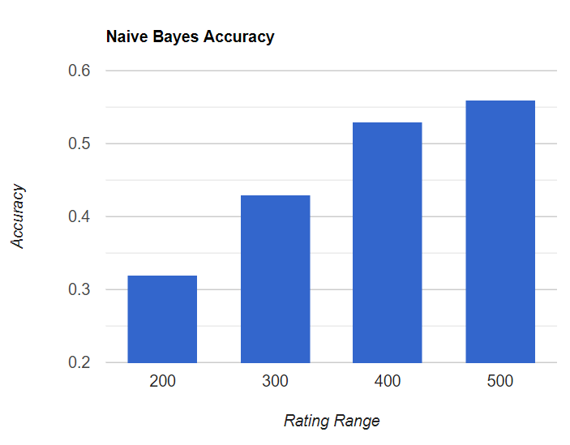
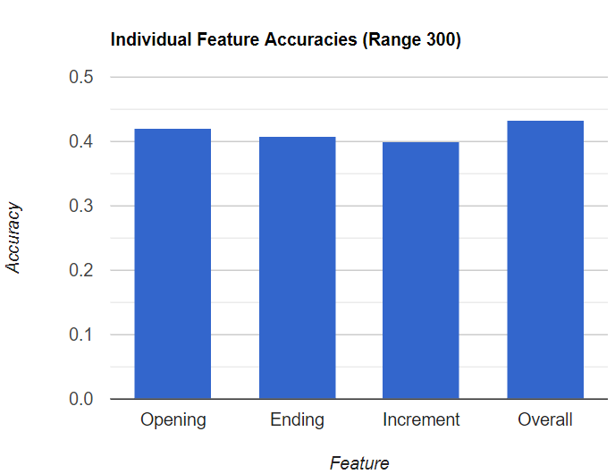
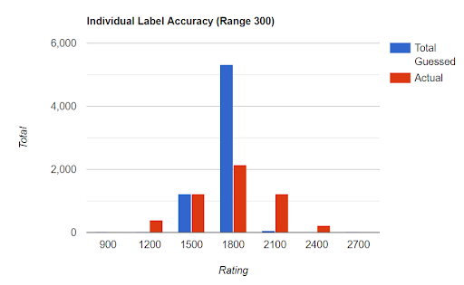
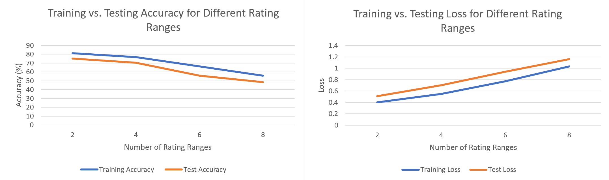
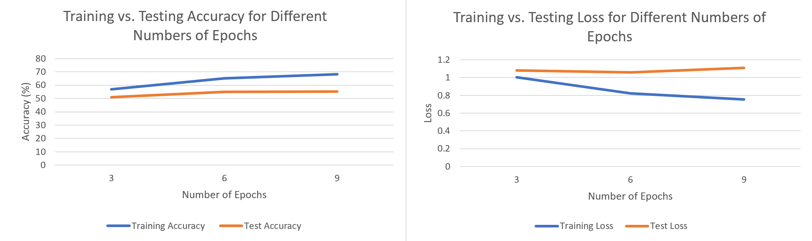

Abstract
Chess is a vastly complex game with millions of players worldwide ranging in skill from beginners, who may simply know how to play the game, to grandmasters, who dedicate their lives to understanding its intricacies. This spectrum of skill levels is commonly represented with something called the Elo rating system, which is a way of ranking players in zero-sum games such as chess. While a human may be able to tell generally which end of the rating spectrum a player belongs to by watching them play, we would like to know how accurately a machine learning algorithm could analyze a single game of chess and classify its players into an appropriate rating range. Previous studies have focused on predicting the outcome of a chess game based on a history of the players’ games, as well as analyzing a player’s annotations (qualitative data) to predict their rating [5], but none that we have found have focused on classifying ratings based on a single game. We have implemented a long short-term memory recurrent neural network (LSTM RNN) to take in the sequence of moves to classify the average rating of the game’s players into an Elo range. We will compare this model with our baseline, which is a Naive Bayes classifier taking in all but the sequence of moves, which is classifying at about 50% accuracy.
Background
Chess, and specifically online chess, has been booming in popularity in the past year. This is mainly due to the pandemic forcing people indoors to find new hobbies as well as the release of the Netflix show “The Queen’s Gambit” sending new players into the 64 squares. In addition, chess is one of the most famous games of all time and something that our entire team personally enjoys.
A related game in the realm of chess is one where a player examines a single chess game, move by move, and tries to guess the Elo rating of the people who played it. This is the type of challenge that our team wants to tackle with machine learning. Upon completion, this project would allow players to succinctly summarize their performances in specific games rather than across multiple matches or tournaments.
Chess has always been one of the most heavily studied applications of machine learning. However, most of it has focused on developing engines to play the game, while there has been little work done in classifying the strength of the players. Previously, machine learning has been used to calculate Elo ratings for online chess players based on their overall performance in every game they have played competitively [2]. We have also found a model that tried to predict chess rating from the player’s annotation of a game [5]. However, we could not find a publication detailing a model that tackles the specific problem that we are interested in.
Problem Definition
The problem that this project will consider is using a single chess match (the input) to try and estimate the average rating of both of the players (the output). The inputs to our baseline model, the Naive Bayes classifier, will include the start and end times (duration) of the game, the number of turns, the game’s winner, the time increment, and opening information. The inputs to our main model, the LSTM classifier, are the sequence of moves in standard chess notation. We want our models to output an estimate for the range of the average rating of the two players. Therefore, this is a classification problem where the classes are predetermined ranges of the rating. For example, if the classes for the model were “1 - 500”, “501 - 1000” ,”1001 - 1500”, and “1501 - 2000” and the average rating of an specific input was 1150, then we would want our model to classify that instance as “1001 - 1500”. The size of this range is parameterized in code, and we will experiment with a variety of sizes. Implicit in our model is the assumption that players of a given rating will play consistently enough so that the “noise” in their performances will look roughly normal. This would allow us to confidently predict instances into classes of narrower ranges.
Data Collection
Our project uses a dataset from Kaggle that includes a collection of information from about 20,000 online chess games played on lichess.org [1]. This dataset is perfect for our problem since it includes a wide variety of game information while covering a wide spectrum of Elo ratings. Some of the data was able to be taken directly, although we needed to apply some transformations. An important transformation occurred in translating Unix timestamps into readable times using built-in Python functions. This allows us to see the length of games in the dataset, as well as the starting and ending times, which can be used as predictors in case the skill level of players at certain times of day should differ, for example. Another important step was to transform the integer-valued Elo ratings of both players into discrete bins of parameterized width representing the average rating of the two players. In addition, unnecessary columns were removed for table readability and processing, Ordinal encoding was used for binary variables, and One-Hot encoding was introduced for categorical variables. Despite this drastically increasing the dimensionality of our input, it allows us to use these variables in our classification models, hopefully producing results that are more reflective of reality. Finally, the list of moves (the most important feature) was processed differently depending on which algorithm the data was being fed to: a Naive Bayes classifier ignores this feature completely, an RNN uses a bag-of-words representation, and a CNN would use a bit-board representation (see the discussion section).
Methods
For the baseline we used a Naive Bayes Classifier. The classifier uses the result of the game, the time increment, and the opening move in order to classify players into a range of possible ratings. This is not a novel method, but it is meant to serve as a representation of how well the categorical data in our dataset can classify players. The results gained from the Naive Bayes classifier will provide insight into whether that data can or should be used in our recurrent neural network.
Our primary model is a long short-term memory recurrent neural network (LSTM RNN). This model will be for classifying a chess player’s rating based on the sequence of moves in a game they played. We chose an LSTM implementation because LSTMs have the ability to detect long-term dependencies and patterns within sequences of data. Since each move of a chess game directly depends on the previous moves, this model makes sense for processing the sequence of moves, as opposed to passing in the entire sequence as a single feature. LSTMs are a well-established method for learning sequential data such as text, but we have not found examples of it being used for chess moves. Our RNN model contains an embedding layer, which increases the dimensionality of each input; a series of LSTM layers, each including dropout to reduce overfitting; and a dense layer, which produces the final output with a softmax activation function.
Metrics
For determining the accuracy of the Naive Bayes classifier, we simply took the number of correctly classified data points divided by the total number of data points. We also applied the metric to each of the individual features in the classifier to see if one is better at classifying than the others. This metric exactly calculates the accuracy of the classifier, but does not provide further insight into where the classifier is succeeding or failing. For this, we graphically compared the distribution of the classifier’s prediction with the distribution of the test set. This is just to show how well the Naive Bayes is classifying to provide insight into the overall accuracy metric.
For the RNN, we used sparse categorical cross-entropy loss. Because the sparse function was chosen, we do not have to worry about one-hot encoding the sequence of moves, which would not make much sense in this context anyway. The goal of training the RNN is to minimize this loss function as much as possible.
Results: Naive Bayes Baseline
The accuracy of our Naive Bayes baseline for different rating range sizes is displayed in the “Naive Bayes Accuracy” graph. The classifier consistently outperforms random predictions, as it has a 56% accuracy across 4 classes (range 500), a 43% across 7 classes (range 300), etc. Additionally, the relative accuracy of each feature is shown in the “Individual Feature Accuracies” graph. We see that they all perform at around the same accuracy, and that the best classifier is the full Naive Bayes that takes into account all three features.
 However, the Naive Bayes classifier was predominantly simply guessing whichever rating had the highest percentage of players. The individual label data shows that the classifier predicted that almost all of the players were rated 1800, neglected to classify players as less than 1500 or greater than 2100, and also rated very few players 2100 despite its significant representation in the test set.
This isn’t unexpected as the Naive Bayes classifier takes prior probability heavily into account. However, because each feature offers so little information, the classifier over-values prior probability. These results are subpar, mostly because a Naive Bayes classifier is not the ideal solution for this kind of problem, but also because the features didn’t provide enough information to overcome the weight of the prior probabilities. Utilizing the RNN should drastically increase the accuracy of classification.
Results: RNN
The new results from the RNN could certainly be improved upon. Unless otherwise stated, the data presented is for an RNN model containing only one LSTM layer with 100 hidden states. The following plots compare the training and testing accuracy as well as the training and testing loss for different numbers of rating ranges. Each range is calculated with 2800 as the maximum rating; for example, for 4 ranges, the classes will be 1-700, 701-1400, 1401-2100, and 2101-2800.
As expected, the loss increases and the accuracy decreases as the size of each rating range decreases. With only two classes, the training accuracy was nearly 80%, but this number decreased to around 50% with eight classes. Still, these accuracies are higher than our Naive Bayes baseline model. Additionally, it is important to note that the test loss is always larger than the training loss and the test accuracy is always lower than the training accuracy. This is evidence of overfitting, and we attempted to mitigate this issue by tuning hyperparameters, beginning with the number of epochs. The following plots show the training and test accuracies and the training and test loss values for different numbers of training epochs.
These plots show definite evidence of overfitting as the test loss stays largely the same as the number of epochs increases and the training loss decreases. This means that the model was learning the training dataset too closely, improving its accuracy for those data points specifically while performing worse on outside data.
We tried to find other ways to reduce overfitting in our model. The first was increasing the percentage of data points involved in dropout for each iteration. However, while increasing this number past the initial 20% did reduce overfitting slightly, it also showed significant decreases in accuracy. Additionally, we tried tuning the number of hidden layers in the single LSTM layer, but after trying 25 and 50 layers, the results seemed to be best with the original 100 layers. The one solution that did seem to help with overfitting was increasing the number of LSTM layers and adjusting the number of hidden layers within each. When training a model with three LSTM layers with sizes 75, 50, and 25 for six epochs to classify into rating ranges of size 400, the training and test accuracy were nearly identical (around 49%). This technique showed promise in reducing overfitting, yet the training and test accuracy both decreased.
Discussion
Through this project, we have begun to learn how to define a problem and plan a solution using machine learning principles. One specific example of this is data preprocessing; we have learned more about how to encode and reformat data for our problem, as well as which features in a dataset to keep and which to cast aside. Additionally, we have cemented our knowledge of Naive Bayes classifiers through the process of creating our baseline model, understanding the benefits and pitfalls of such models. We also have begun to learn about the inner workings of RNNs and how to solve the problem types they were designed for. Finally, we have gained experience in methods of choosing and improving our current models in order to more accurately solve our problem.
Given more time, another model that we would have pursued is the Convolutional Neural Network (CNN). These models are most commonly used with image datasets because of their ability to preserve proximal relationships in the input space. In order to apply such a model, we would need to convert the data for each chess game into an image-like format. The solution that we considered is using the bit-board representation of a chess board, whereby each piece is represented by a “1” on their own 8x8 grid of zeros. For example, the board for the kings would have two 1’s mirroring the positions of the two kings and zeros elsewhere. With this, each game state would be represented by a 6x8x8 binary array while each individual game of length l would be represented by an lx6x8x8 binary array. One limitation to this approach is the fact that the input data would be very sparse, i.e. mostly zeros, similar to a one-hot encoding of the board state. If a CNN encountered trouble handling this data, we could also employ dimensionality reduction techniques such as singular value decomposition or principal component analysis to reduce the size of our input space. The largest challenge with this approach (and the reason we weren’t able to implement it) is the difficulty of transforming the list of moves from each game into the bit-board representation.
The Naive Bayes Classifier could have been a Gaussian Classifier, since our data was similar to a Gaussian distribution. The argument against using a Gaussian Classifier is that it may lead to overfitting to the training dataset. The number of features was also quite small, at only three. This was in part due to the limitations of the data set, but also in our ability to manipulate the dataset into categorical data for the model.
There are definite improvements that could be made to our RNN model to increase its accuracy while preventing overfitting. Further hyperparameter tuning could help with this, whether it is experimenting with different training and testing batch sizes or optimizing the number of LSTM layers and the size of the hidden state within each. The hyperparameter tuning step is something our group had little prior experience with, so our efforts were most likely inadequate in this area. Additionally, the inclusion of qualitative features into our RNN model such as those we input into the Naive Bayes (outcome of the game, time increment, and opening used) could increase the accuracy of our model. Currently, only the sequence of moves is being considered by the RNN, but the context about the game provided by these other features may assist with classification.
Ethics Statement
While the development of chess AIs along with machine learning models for other games has raised a large amount of ethical concerns on the questions of weak and strong AI, we will limit our discussion of ethics to the scope of our project as it relates to chess. The vast majority of machine learning applications to chess have focused on developing engines that can play the game better than humans, in an as close to optimal way as possible. This has directly led to the facilitation of cheating in the sport of competitive and online chess, but it has also vastly improved the way that humans understand the game and we would argue that machine learning has left the chess world all the better.
An algorithm like ours which classifies the strength of a player from individual matches could be used as another quick form of training analysis for their performance. For those who are able to access this algorithm or similar ones, this could create a slight unfair advantage over those who are not. Therefore, to maintain ethical fairness, we would recommend that such algorithms be released free to all to prevent certain players from gaining paid advantages over others. However, with this condition, we believe that our algorithm would serve as a benefit to the chess community and not come with any other ethical concerns.
One hypothetical application of concern could be in “anonymous” accounts, where chess players choose to play in an incognito fashion or have their rating obscured. A future algorithm that improves on ours could have the ability to identify the player’s rating against their will or even be so precise as to be able to identify the games of specific players. This would hamper a player’s ability to play online chess anonymously, such as grandmasters who like to create alternate accounts to play for fun or to practice and prepare for tournaments without their activity being detected and plans being discovered. It is hard to say whether or not such an algorithm could become so precise, however it is never too early to start thinking about the potential pitfalls of machine learning applications such as our project.
Bibliography
- [1] Chess Game Dataset (Lichess) https://www.kaggle.com/datasnaek/chess
- [2] Finding Elo https://www.kaggle.com/c/finding-elo
- [3] G. Di Fatta, G. M. Haworth and K. W. Regan, "Skill rating by Bayesian inference," 2009 IEEE Symposium on Computational Intelligence and Data Mining, Nashville, TN, USA, 2009, pp. 89-94, doi: 10.1109/CIDM.2009.4938634.
- [4] Glickman, Mark E., and Albyn C. Jones. (1999) Rating the chess rating system CHANCE-BERLIN THEN NEW YORK12 (1999). 21-28.
- [5] Scheible, Christian and Schutze, Hinrich, “Picking the Amateur’s Mind - Predicting Chess Player Strength from Game Annotations,” The 25th International Conference on Computational Linguistics, pages 311-321, Dublin, Ireland, 2014